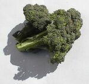
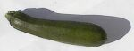
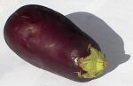

| Nou fait sèrvi l's ouongnons dans quâsi touos les pliats: des soupes, d's êtuivées ou fricachis auve des steaks. |
|  | Lé brécolîn est mangnifique coutchi à la Chinnouaise dans les stir-fry, coumme nou dit. Nou l'sue, et nou-s'en fait d'la soupe. |
 | Les tonmates sont bouannes dans les salades ou dans l's êtuivées. Nou peut les coper pouor mett' sus un pizza ou faithe eune sauce. |
|  | Nou cope les courgettes et les couque dans la câssetrole auve du beurre ou dé l'hielle d'olive. I' sont bouannes étout copées en ronds et pèrchies sus eune broche auve d'la viande. |
|  | L'aubèrginne est un mio pus exotique coumme lédgeunme, mais oulle est bouanne dans d's êtuivées auve des courgettes, des tonmates et d's ouongnons. |
 | Les pouothieaux sont bouans dans les pâtés auve du fronmage, ou bein dans des soupes en Hivé. |
Viyiz étout:
Mait'e Cliément d'Caen est bain dêterminé de jamais n'craître d'aut'es tomates